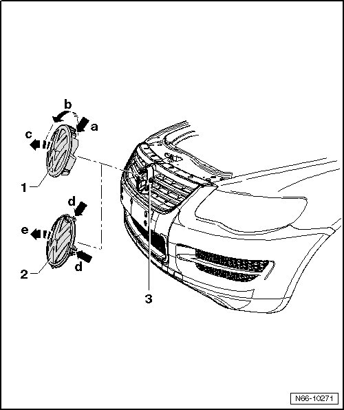
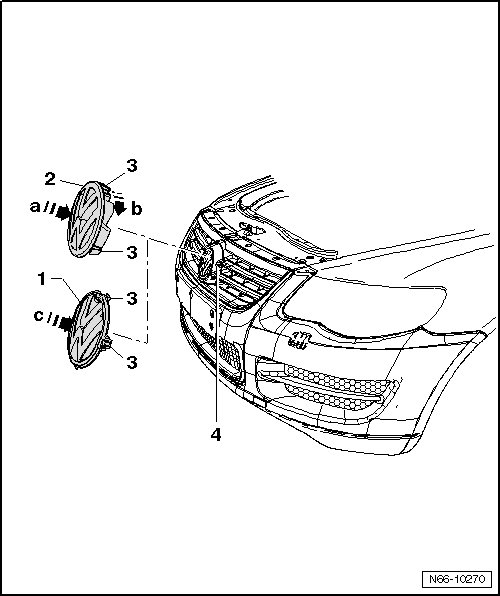

Body Emblem: Service and Repair
Radiator Grille
Emblem, from 11.2006
Removing

Emblem on vehicles without ACC (automatic cruise control)
- Remove the bumper. Refer to --> [ Bumper Cover ] .
- Press upper retaining hooks - 3 - out of retainer - arrow a -.
- Turn the emblem - 1 - slightly in - direction of arrow b -.
- Tip emblem out of radiator grille - 4 - - arrow c -.
Emblem on vehicles with ACC (automatic cruise control)
- Press the two retaining hooks - 3 - out of retainers - d arrows -.
- Tip emblem - 2 - out of radiator grille - 4 - - arrow e -.
Installing

Emblem on vehicles without ACC (automatic cruise control)
- Place emblem - 2 - rotated slightly - arrow a - with retaining hooks - 3 - in openings in radiator grille - 4 -.
- Rotate emblem in - direction of arrow b - until retaining hooks - 3 - are engaged.
Emblem on vehicles with ACC (automatic cruise control)
- Press emblem - 1 - straight - arrow c - into radiator grille - 4 - until all retaining hooks - 3 - are engaged.